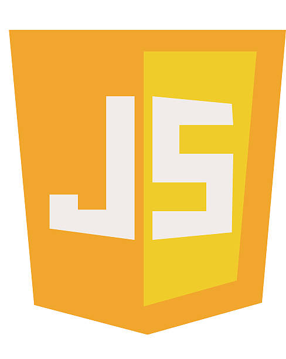
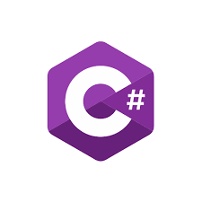

Dovednosti
HTML
Sémantická struktura webových stránek.
Hravý život
CSS
Styly a responzivní rozložení.
Hravý život
JavaScript
Interaktivní formuláře a práce s DOM.
Vyzkoušet dotazník
C#
Učím se v kurzu a tvořím konzolové aplikace.